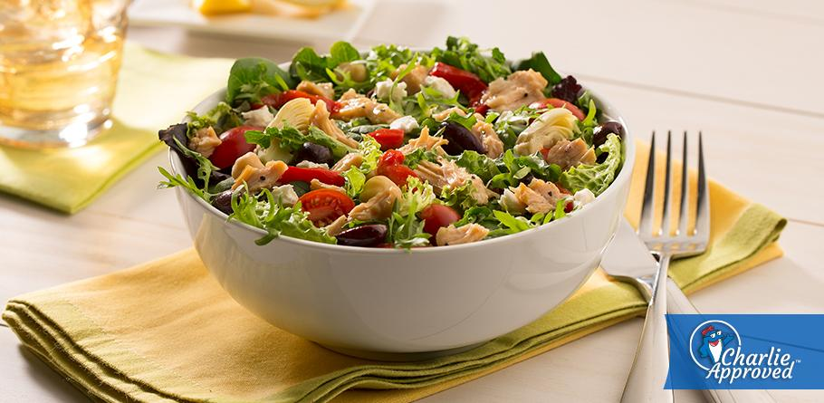

LEMON PEPPER CHICKEN W/ SPINACH SALAD

Like many great inventions, this recipe was created out of necessity.
My best buddy in the whole wide world and I had a real bad Wingstop phase. We were absolutely addicted to their lemon pepper fried chicken. Soon, we found ourselves hemorrhaging money; it was simply too good to stop ordering. Then, out of the blue, we came up with an idea...
WE WOULDN'T CRAVE WINGSTOP IF WE HAD A BETTER OPTION
And today I'm going to teach you what that better option is... here's what you'll need
Ingredients
- Chicken Breast
- Lemon Pepper Seasoning
- Lemon
- Spinach
- Tofu (extra firm)
- Apple
- Flour
- EVOO (Extra Virgin Olive Oil)
- Salad Dressing (it's your choice as to which one)
Steps
- Begin by cutting the chicken into strips/clumps.
- Cut the lemon in half.
- Cut the block of tofu into cubes; place them in a container.
- Cut the apple into cubes; place those in a container as well.
- Place the chicken in a bowl and squeeze the lemon over the chicken. The goal is to let it marinate.
- Begin working on the breading. You're going to make a powdery combination of flour and lemon pepper seasoning.
- Toss the marinated chicken around in the flour. Make sure it's fully coated.
- When you have a good amount of coated chicken, begin heating up that EVOO in a skillet and add the chicken when the oil is hot.
- Put a lid over the chicken so you don't dry it out.
- Now's a good time to start frying the tofu, too. (Both the chicken and the tofu are going to take a while to cook, so it's best to start frying them both at the same time.)
- While the proteins are cooking, put some spinach in a big bowl with the apples you cut earlier
- Apply salad dressing, then proceed to toss the salad. Make sure the apples are spread out.
- After sufficient tossing, you're going to place the greens and sweets on a plate... kind of like a bed for the proteins.
- When the proteins are done cooking, you're going to place both of them in the middle of the dish... or don't. Whatever works for you aesthetically.
PUT A FORK IN IT
Because you're done, baby. You might want to salt that tofu though...
more recipes